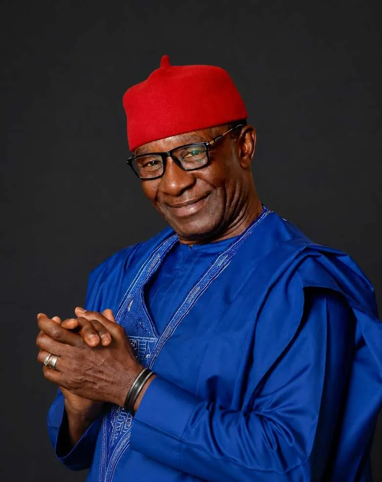

Leadership forged in command
A leadership team that brings senior military command together with legal, engineering, energy, communications and government advocacy expertise.

Major Gen V.O. Ezugwu (Rtd)
Executive ChairmanMajor General V.O. Ezugwu (Rtd) serves as Executive Chairman of PrimeTEK Multi Biz Solutions. He is a former Commander of the Infantry Corps of the Nigerian Army, with a career spanning counter-insurgency operations, force readiness, and the coordination of personnel, weapons and logistics under real combat conditions.
As former Director General of the Defence Industries Corporation of Nigeria (DICON), he led the development of the Ezugwu MRAP in collaboration with the Command Engineering Depot, a vehicle now in service with the Nigerian Army.
His decades of senior military engagement underpin PrimeTEK's credibility and access within the global defence ecosystem. Relationships built across years of institutional command give the company established links with a broad network of reputable manufacturers and dealers worldwide.
Where each leader focuses
Lord Amb. Dr Ese Okotie (ESQ)
CEO / Managing DirectorLeads day-to-day management of the company, sets commercial direction and oversees delivery across every client engagement and product line.
Dr Bernard Bulkin
DirectorSits on the board, contributing strategic oversight and governance to PrimeTEK's growth and international partnerships.
Okechukwu K. Ajunwa (SAN)
Notary Public, Chief Legal CounselA Senior Advocate of Nigeria who leads legal affairs, contracts, regulatory compliance and the legal frameworks around defence procurement.
Ms. Miriam Quintos
Head of Communications and Government AdvocacyManages engagement with government institutions and stakeholders, making sure PrimeTEK's capabilities are understood where decisions are made.
Bobby Quintos
Oil and GasLeads PrimeTEK's work with the oil and gas sector, applying security and surveillance capability to the protection of energy infrastructure.
Abba Sani Kurawa
Director of EngineeringHeads engineering, from local manufacturing and vehicle components to systems integration and technical support for deployed platforms.
Leah Tedrow
Director of Communications and MarketingShapes PrimeTEK's brand, communications and market presence, including exhibitions, publications and client relations.
Augusto Camachi Jr.
Prime Cornerstone Group CEOChief Executive of Prime Cornerstone Group, a strategic partner that brings wider business networks and international reach to PrimeTEK.
Join the team
We are always interested in hearing from veterans, engineers and specialists who share our commitment to national security.
Get in touchOur leadership background is drawn directly from Nigerian military command. That foundation shapes how we approach every engagement.